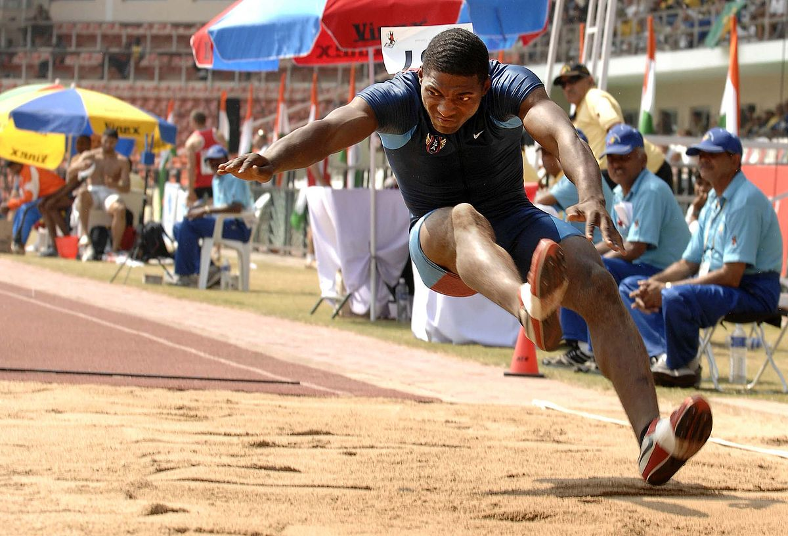

<body>
 <figure>
  
 </figure>
  <ul>
   <li><a href="https://clay1022.github.io/final/index.html"><font size="5">肌肥大</font></a></li>
  </ul>
 <p><font size="5" color="navy" face="微軟正黑體"><strong>簡單定義為肌肉在一定時間內產生出的最大力量，與日常生活或競技運動表現有很大的關聯<br>
 </strong></font></p>
<hr>
 <dl>
 <dt><b><i><font size="8" color="blue" face="華康粗圓體">次數</font></i></b></dt>
  <dd><font size="5" face="微軟正黑體">每組動作次數為3~6為主，每下動作應專注在控制快速向心收縮的部分。</font></dd>
 <dt><b><i><font size="8" color="blue" face="華康粗圓體">組數</font></i></b></dt>
  <dd><font size="5" face="微軟正黑體">建議每種動作安排1~3組，每組之間休息2～3分鐘，隨著重量上升，<br>
                                      休息時間可以拉到長；如果是較輕的重量，則是1～2分鐘。</font></dd>
 <dt><b><i><font size="8" color="blue" face="華康粗圓體">重量選擇</font></i></b></dt>
  <dd><font size="5" face="微軟正黑體">這裡分為上下半身，上半身建議重量在1RM的30%~60%，下半身重量則<br>
                                      建議在1RM的60%左右。</font></dd>
 </dl>
</body>
